|
|
| shelled snails text index | photo index |
| Phylum Mollusca > Class Gastropoda > Family Ovulidae |
| Soft
coral false cowrie awaiting identification* Family Ovulidae updated Sep 2020 Where seen? These snails are sometimes seen in pairs on flowery soft corals on many of our shores. They closely resemble the clumps of polyps of the soft corals that they eat. Often a pair is seen in one colony of soft corals. Features: 1.5-2cm. Shell oval, white smooth. Some have a fine orange line along the edge, others with blotchy orange bars. Mantle transparent with irregular brownish blotches outlined in darker brown and short white finger-like protrusions. The foot may have fine coloured outline and fine coloured bars. Coloured tentacles and siphon. Found on flowery soft corals (Family Nephtheidae), especially in Pink flowery soft corals also in Ball flowery soft corals and Asparagus flowery soft coral. Several similar looking falsw cowrie species can be found in flowery soft corals including: Prionovolva cf. brevis, Diminovula alabaster, Margovula marginata and Globovula sphaera. |
 Closely resembles the soft coral. Beting Bronok, May 11 |
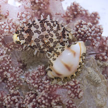 Often seen in a pair. Pulau Sekudu, May 12 |
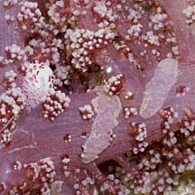 Chomped on parts of the soft coral. Beting Bronok, Jul 08 |
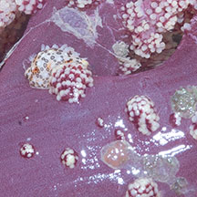 Chomped areas and eggs (?) nearby Beting Bronok, May 11 |
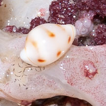 Eggs nearby? Chek Jawa, Apr 08 |
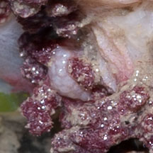 Eggs nearby? Chek Jawa, Apr 08 |
|
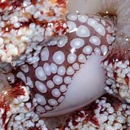 Prionovolva sp.# Tuas, Aug 09 |
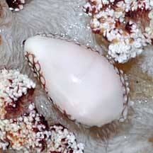 |
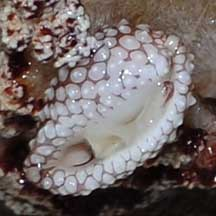 |
|
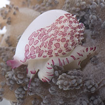 Globovula sphaera# Pulau Hantu, Nov 12 |
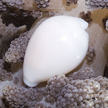 |
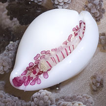 |
*Species are difficult to positively identify without close examination.
On this website, they are grouped by external features for convenience of display.
| Soft coral false cowries on Singapore shores |
On wildsingapore
flickr
|
| Other sightings on Singapore shores |
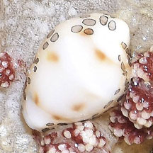 |
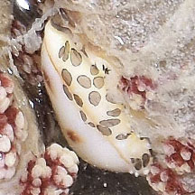 |
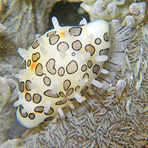 Tanah Merah, Jan 10 Photo shared by Loh Kok Sheng on flickr. |
Acknowledgment
|